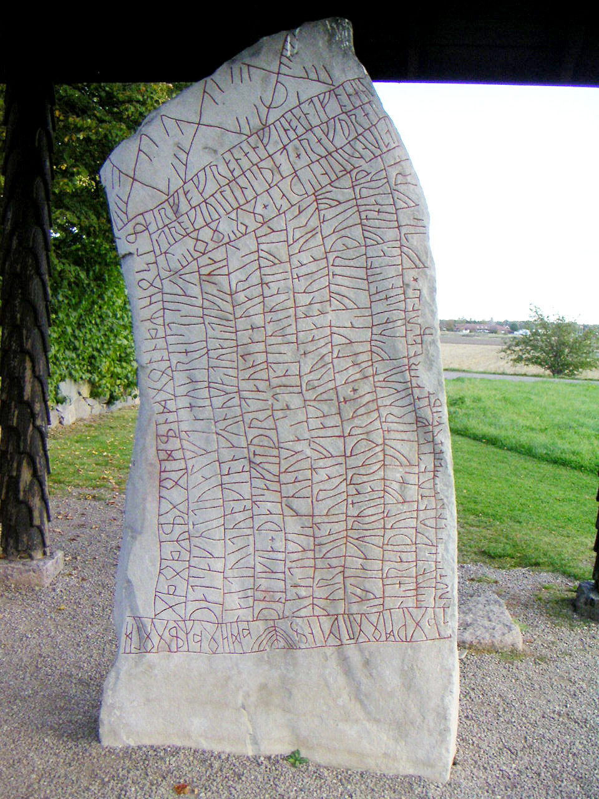

Живые знаки, а не буквы: цена знания, восемнадцать чар, то, что говорят камни, — и става

Что такое руна
Слово «руна» (runa) на древнескандинавском значило не просто «знак», а «тайна», «шепот» — то, что передавалось вполголоса. Рунное письмо появилось у германских народов не позднее первых веков нашей эры: древнейшие находки датируются II веком. На Севере руны вырезали на камне, дереве, кости и металле — ножом, по числу прямых черт, как по линиям родословной.
Но ключевой вопрос — не где резали, а что это было. Для северной традиции руна — не буква для записи языка, а активная сила: часть глубинной структуры космоса, доступ к которой ограничен. И это не поздняя поэтизация, а позиция самого источника: в «Речах Одина» руны не даны — они заслужены.
Я знаю, что Один / висел на ветреном дереве / девять ночей, / раненный копьем, / посвятивший себя Одну / сам себе.
— «Речи Одина», строфа 138
Девять ночей на «ветреном дереве» — том, что отождествляется с Мировым Древом, раненный копьем, посвятивший себя самому себе. Из этого акта рождается главный принцип рунической традиции: знание и власть над знаками приобретаются через боль, риск и полное погружение в пограничное состояние — между жизнью и смертью. Современные представления о рунах как о наборе символов для гадания или для украшения — продукт поздних восстановительных движений, а не древней основы.
Кто вырезал руны
Один асам вырезал, / Даин эльфам, / Двалин-Медленный для гномов, / Ямник великанам; / Я для сынов человеческих / Сам вырезал одному.
— «Речи Одина», строфа 143
Это свидетельство разрушает привычную картину «единого алфавита». У каждого народа — своя система: Один вырезал руны асам, Даин — эльфам, Двалин — гномам, Ямник — великанам, а людям вырезал их Один сам. Подлинная практика была разветвлённой: разные школы, разные наборы символов, разные процедуры — с региональными и культурными вариациями. Говорить о «единой системе рун» — значит упрощать.
Футарк — двадцать четыре знака
Полный ряд из двадцати четырёх знаков называется футарк (по первым шести: феху, уруз, турисаз, ансуз, рейдз, кеназ). Ряд делится на три группы по восемь — атты: атт Одина, атт Хеймдалля и атт ванов (в поздней традиции — атт Фрейра). Главный памятник о смысле знаков — Рунная песнь в «Речах Одина» (строфы 148–165): короткое четверостишие к каждой руне, где рассказчик признаётся, что знак познал на опыте. Ниже — все двадцать четыре знака со старым именем, значением и строкой из Рунной песни.
Первый атт — атт Одина
Второй атт — атт Хеймдалля
Третий атт — атт ванов
Лjoðatal — восемнадцать чар
Самая практическая часть «Речей Одина» — раздел Лёдаль («счёт песен», строфы 145–163): Один перечисляет восемнадцать своих чар, у каждого — конкретное применение. Это прямое свидетельство того, для чего руны использовали в жизни: не для абстрактной мудрости, а для защиты, лечения, дороги, огня, моря — и для дел потемнее.
| Чар | Строфа | Применение |
|---|---|---|
| «Помощь» | 146 | против обвинений, скорби и тревог — защита |
| Чар врача | 147 | «нужен человеку, чтобы лечить» |
| От оков | 148 | «ни меч, ни палица не будут кусаться; ни кандалы, ни цепи не будут мешать» |
| Свобода в оковах | 149 | «цепи с ног твоих отпрыгнут, а руки твои освободятся» |
| Остановка полёта | 150 | остановить летящий нож или стрелу — если замечен вовремя |
| От огня | 152 | потушить пожар в доме любой мощи |
| Тихое море | 154 | «ветер на воде ляжет, всю волну успокоит» |
| Победный | 156 | произносится под щитом перед боем — безопасность верным друзьям на поле |
| Двенадцатый | 157 | «если вижу висящего в петле, то я чарую, и он ходит и говорит со мной» — одно из немногих прямых упоминаний некромантии |
| Шестнадцатый | 159 | лишить искусную девушку любви и сердца, изменить её мышление |
| Семнадцатый | 161 | привлечь женщину, даже застенчивую |
| Восемнадцатый | 163 | «вёльва пела у врат рассвета: силу богам, мастерство эльфам, мудрость мне» — различение природы богов и эльфов |
Отдельно, вне счёта, строфа 79 связывает руны с медициной напрямую: «трава исцеляет язвы, а руны — раны от меча». Там, где трава бессильна, начинается работа знака.
Семь «знаешь ли ты?»
Знаешь ли ты, как вырезать? / Знаешь ли ты, как читать? / Знаешь ли ты, как окрашивать? / Знаешь ли ты, как испытывать? / Знаешь ли ты, как призывать? / Знаешь ли ты, как приносить в жертву? / Знаешь ли ты, как отправлять?
— «Речи Одина», строфа 144
Эта серия вопросов — карта всего ремесла: вырезание, чтение, окрашивание, испытание, призыв, жертва, отправка. Руническая магия — не механическое начертание, а сложный многоэтапный ритуал: каждый шаг, от выбора материала до правильного произнесения, имел значение. «Окрашивание» — вероятно, краской или кровью — связывает руну не только с формой, но и с жизненной энергией. «Испытание» остаётся загадкой: возможно, это дополнительные действия — приношения или молитвы — необходимые для активации силы. «Речи Одина» представляют руны не как набор готовых ответов, а как систему знаний, требующую глубокого понимания и серьёзного подхода.
Второе лицо: камни и брактеаты
Помимо «Речей Одина», у рун есть лицо материальное — эпиграфика: тысячи надписей, сохранившихся с II века. По данным крупных проектов (RuneS-Project, Scandinavian Runic-Text Database) известно несколько сотен надписей старшим рядом и тысячи — младшим, датируемых I–XV веками. Более 80% находок сосредоточено в Швеции. Самый ранний памятник полного ряда — Килверский камень на Готланде (~400 г.): на нём записана вся двадцатичетырёхбуквенная азбука подряд — знак того, что система к этому времени была уже развита и стандартизирована.
По функции надписи делятся на три категории. Идентификационные и мемориальные (самые частые): имя владельца на копье, мече или стреле — присвоение и индивидуализация предмета; мемориальные камни Викингской эры (c. 800–1050) сообщают имя усопшего, его род, имя поставившего камень — и иногда то, что умер он далеко, в походе. Знаменитый камень Тюна: «Водурида поставила камень в память мужа». Это не заклинания, но и не просто подписи: ритуальная память и статус — тоже форма власти. Практические: имена ремесленников на расчёсках и веретёнах, личные знаки; возможное административное применение (налоги, территория) догадочно — документов не сохранилось. И третья, главная для магии: магические и сакральные надписи, где руны призваны вызвать и направить сверхъестественную силу.
На оружии, кроме имени, встречались формулы для боевой мощи и победы; на украшениях — как личные амулеты. Особенно показательны брактеаты — золотые медальоны V–VI веков с короткими магическими формулами. Самая известная из них — alu (ᚨᛚᚢ — ансуз, лагуз, уруз): большинство исследователей не считают её словом «эль» — это магическая формула, чей смысл утратился в языке, но сохранился в самом звучании и в значении составляющих рун. Рядом с ней — laukaz (порей/чеснок — защита и лечение), lathu (призыв, почти только на брактеатах) и auja (удача, милость — в формуле «gibu auja»: «я дарую удачу»). На оружии часто встречается тройной тиваз — рунна Тюра, бога войны и права: повторение усиливает призыв защиты и победы. Есть и связанные руны — несколько знаков, начертанных на общем стебле: сила не только в каждом знаке, но и в их числе и расположении. В поздний период рунами писали и на палочках — личные сообщения, счета, заклинания: в Брюгге находили палочки с любовными чарами.
Ограничение этого источника — контекст: надписи короткие, часто неполные, и точные слова обрядов, которые им сопровождались, утрачены. Эпиграфика подтверждает картину «Речей Одина» — руны как практический инструмент — но не раскрывает её полностью.
Руны в поздней поэзии
В «Заточении Сигурда» (Sigrdrifumal) Сигурд просит Сигрид научить его рунам, и она передаёт конкретные формулы: победные руны — вырезать на древке меча и на лезвии, чтобы враг не устоял; руны, рождённые водой — на корабельной мачте, для защиты в море; руны, рождённые рождением — чтобы помочь в родах. Поздний текст, но он хорошо согласуется с общей картиной «Речей Одина»: руны решали очень конкретные практические задачи.
Отдельная традиция — рунические стихи (англосаксонский и исландский, IX–XII вв.): короткая поэма к каждой руне. Они дают альтернативные, более поздние значения и показывают, как смыслы дрейфовали со временем: расхождения между английским и исландским стихами — свидетельство, что значения менялись в разных регионах.
Иерархия источников
Каждый пласт источников о рунах весит по-разному, и порядки в них важны:
- «Речи Одина» (Havamal) — незыблемый фундамент: прямое повествование самого Одина о цене знания и восемнадцати чарах.
- Эпиграфика — эмпирическое подтверждение: камни, брактеаты, палочки; где тексты и находки сходятся — факт подтверждён.
- Снорри Стурлусон — контекст, но с оговоркой: XIII век, христианская Исландия, учебник для скальдов. К любому его утверждению — метод «триангуляции»: подтверждено Поэтической Эддой? Есть ли археология? Или это его собственный эвгемеристский аппарат?
- Поздняя литература (рунические стихи, саги) — дополнение; менее надёжно, ценно для отслеживания изменения значений.
Става: современная реконструкция
Четыре принципа. Первый: руна — живая сущность, её сила в связях с богами, а не в значении буквы, — отношение к ней серьёзное и уважительное. Второй: знание требует жертвы и намерения — не только учёба, но личный опыт, концентрация и риск. Третий: контекст решает — значение руны зависит от её места в ставе, материала и намерения резца: руна на мече — не та же руна, что на палочке для любовного чара. Четвёртый: сила става — синергия руны, материала и намерения.
- Намерение. Конкретная цель, а не «что-нибудь хорошее». Основания — Лёдаль: защита от врага или опасности; исцеление себя или другого; удача, успех, любовь; общение с миром мёртвых; знание и прозрение.
- Выбор рун. Под намерение — как в списке чар: защита (эльгиз, тиваз), лечение (эйваз, лагуз), дар и союз (гебо), наследие (одала), солнце и победа (совило).
- Материал. Дерево (священные породы); камень — постоянство, память, мемориальные ставы; кость и рог — связь с животным миром, предками и жизненной силой: интуиция, прозрение, и те дела, что касаются мёртвых.
- Вырезание. Очистить материал, сосредоточиться. Лезвие, игла или острая кость: резать одну черту за другой, держа цель в уме, представляя, как энергия намерения входит в знак. Ряд или комбинация — связанная руна усиливает связь.
- Окрашивание (по желанию, но рекомендуется). Красная краска или охра — жизненная сила, кровь, защита; чёрная краска или сажа — тайна, мудрость, дела с миром мёртвых. Сильнейший краситель — кровь (собственная или животная): проколоть палец, капнуть на каждую руну, обвести контур. С крайней осторожностью и пониманием, что ты делаешь.
- Активация и использование. Носить как амулет; поставить в место — у постели больного за здоровье, на столе за успех; использовать в обряде — алтарь, свеча, медитация. Когда цель достигнута — разрушить став: сжечь или похоронить. Завершённый знак не носят бесконечно.
Пример из традиции: гебо + одала на дереве или кости — став-мост к предкам. В полнолуние зажечь свечу, положить став под подушку, перед сном сосредоточиться на предке, которого хочешь увидеть или услышать.
Это реконструкция, а не копия: сила става — в синергии древних знаний, намерения и ритуального процесса. Всё остальное — домысел.
Младший ряд и рунные камни
К IX веку, с началом викингской эпохи, старший ряд на Скандинавии сузился до Младшего (шведско-норвежского) футарка — шестнадцати знаков: часть значений слилась, похожие по начертанию знаки стали взаимозаменяемыми, и алфавит стал удобнее для резки на камне. Именно младшим рядом написаны самые известные рунические камни. Выражение «руна судьбы» — из той же традиции: бросок рун как способ спросить знак; где здесь обряд, а где поздний фольклор, наука спорит до сих пор. Достоверно другое: на камнях и дереве встречаются проклятия, начертанные рунами, — «да будет проклят тот, кто сдвинет этот камень/курган», — реальные надписи с раскопок, а не вымысел.